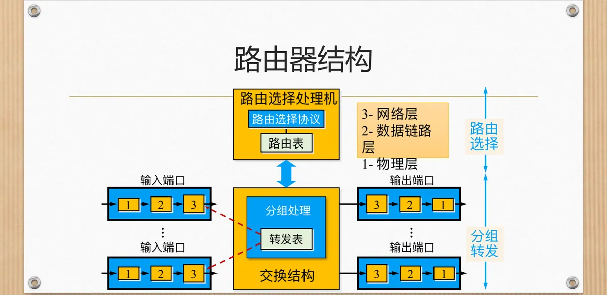
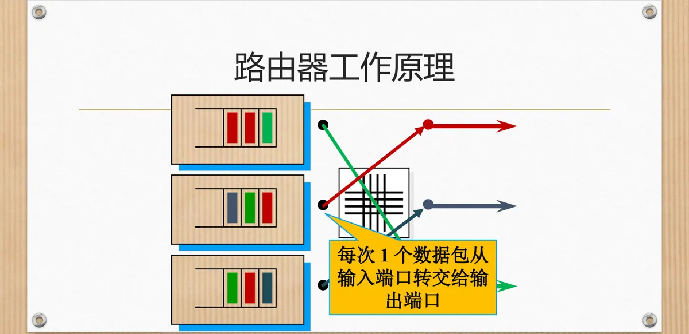
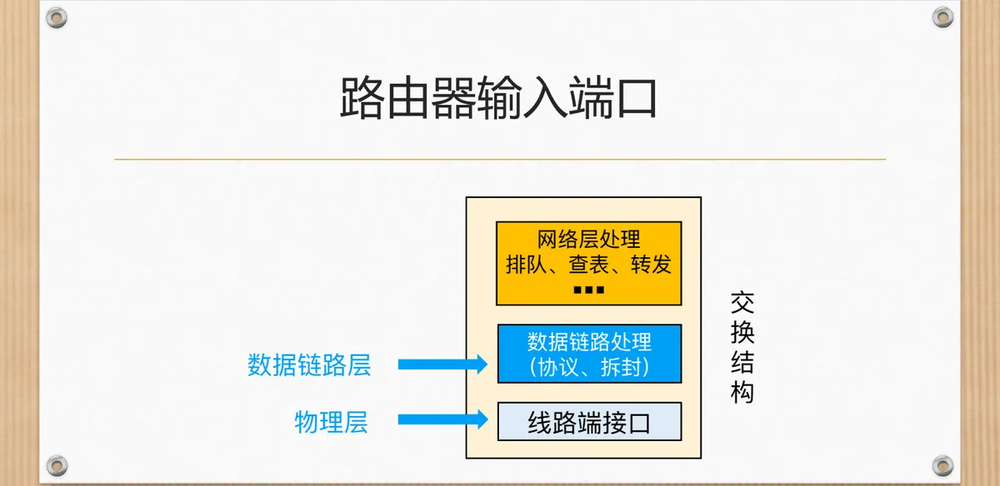
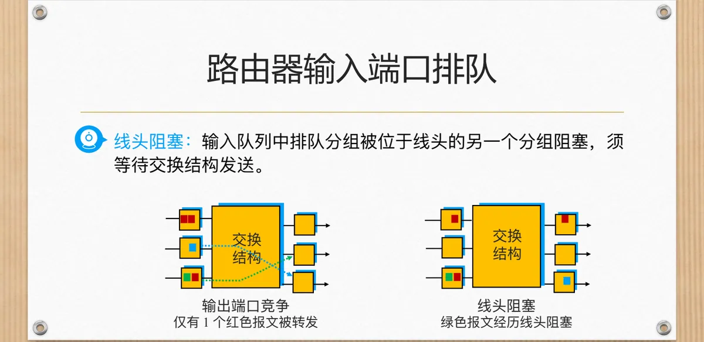
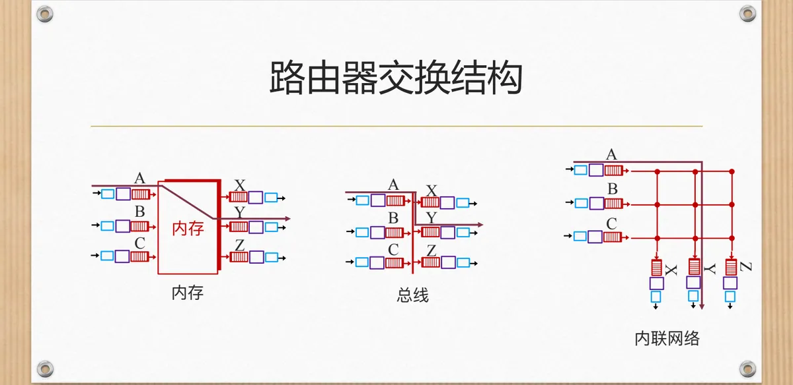
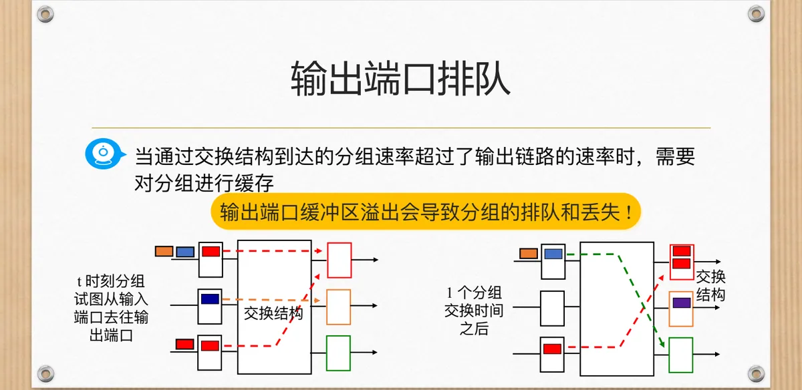

计算机通信与网络 · 第二版讲义 · 第 5 章 网络互联
5.2 网络互联设备—路由器
网络互联最终要靠路由器把独立网络连起来。本节先看它的四大部件，再跟着一个分组走一遍查表、排队、交换与封装的全过程，最后弄清路由表的来历、维护方式以及它与转发表的分工，为 5.3 网络互联中的数据转发打底。
1. 路由器的总体结构
路由选择处理机是路由器的核心：它执行路由选择协议，与相邻路由器交换路由信息，算出通往各目的网络的路径并写进路由表。它不经手分组的搬运，产出是一张表——去某个目的网络该从哪个端口出去、交给哪个下一跳。
搬运分组的是另一条流水线：分组从输入端口进来，经交换结构送到输出端口再发到线路上。端口分三层处理——1-物理层负责比特收发，2-数据链路层负责成帧与拆封，3-网络层完成分组处理，输入端口在这一层查转发表、输出端口完成转发。

2. 分组在路由器内部的一次旅行
分组在输入端口被接收、拆封、查表后得到输出端口号，交换结构把它送到该端口；输出线路忙就排队等待，轮到自己发送时再被封装成帧送出去。
交换结构内部的交换单元把输入端口与输出端口匹配起来，建立输入端口 i 到输出端口 j 的通路。这里有个关键约束：同一时刻，只能有一个数据包从输入端口转交给输出端口，一个输出端口也只能接收一个数据包。
约束之下，排队不可避免：多个分组同时争抢同一个输出端口，或在输入端口等着交换结构腾出通路，就只能等待；本该送出的分组因通路被占用而无法通过，便出现阻塞——交换能力在某一瞬间被争抢的结果。

3. 输入端口：分层处理与分散式交换
在输入端口上，最下面是物理层的线路端接口，把线路上的信号变成比特流；往上是数据链路层的数据链路处理，完成链路层协议的识别与拆封；再往上是网络层处理：排队、查表、转发。
查表查的是本地表，这就是课件的分散式交换：每个输入端口在本地内存存一份路由选择表的副本，不必打扰中央的路由选择处理机，按目的地址就能查出输出端口；代价是每个端口都要存表，路由表一变就得及时同步。
课件给输入端口的处理定的目标是以「线路速度」完成处理：分组到达得多快，端口就得处理得多快，做不到就在端口里积压。

4. 输入端口排队与线头阻塞 HOL
若输入端口的接收处理速率超过了交换结构的转发速率，输入端口就可能产生排队。交换结构每个时刻只能从一个输入端口取一个分组、向一个输出端口送一个分组；多个输入端口同时想去同一个输出端口时只有一个能如愿，这就是输出端口竞争。
更麻烦的是排队的位置：队首分组要去输出端口 1 而端口 1 正忙，它只能等；排在后面的分组哪怕可以去空闲的输出端口 2，也被挡住一起等。这就是线头阻塞 HOL（Head-of-Line Blocking）——输入队列中排队的某个分组被位于队列线头的另一个分组阻塞，只能等交换结构把线头的分组发走。绿色报文经历的正是这种阻塞，它另有出路却被连累。
等待意味着分组要暂存在输入缓冲区里，而缓冲区有限，于是课件点明：输入缓冲区溢出可导致排队时延和丢包——排队时延拉长端到端时延，溢出让装不下的分组被丢掉，这种丢失与线路质量无关。

5. 交换结构：内存、总线与内联网络
交换结构决定分组在路由器内部能搬多快，课件给出三类做法，区别在于分组走哪条通道。
（1）经内存交换
输入和输出端口间的交换在路由处理器的直接控制下完成：分组先被拷贝到系统内存，再由 CPU 转发至输出端口；转发速度受限于内存带宽，每个分组要写进内存再读出来，等于走两次系统总线。
（2）经总线交换
输入报文经一条共享总线把分组直接转发到输出端口，瓶颈换成了总线：总线交换速度受限于总线带宽，所有端口共用一条总线，同一时刻只能有一个分组通过。课件的实例是 Cisco 5600 内置 32 Gbps 总线，已能满足大多数接入网或企业网的路由转发速率需求。
（3）经内联网络交换
总线也不够快，就要克服总线带宽限制，改用内联网络：把多级小的交换单元连成一张网，让多个分组同时在网内不同路径上行进。课件提到 Banyan 网络（原用于多处理机互连），以及配套的固定分组转发——把长度变化的 IP 分组拆成固定尺寸的信元通过交换网络转发。课件的实例是 Cisco 12000，交换速度可达 60 Gb/s。

6. 输出端口与输出端口排队
输出端口的内部顺序与输入端口相反：分组从交换结构一侧到达，先进入排队环节（缓存管理），再经数据链路处理完成链路层的封装，最后从线路端接口变成比特流送上线。输出端口因此管两件事：缓存暂发不出去的分组，并在队列里选择下一个该发的分组，后者课件称为调度原则。
需要缓存的情形是交换结构转交给输出端口的速率超过输出链路速率：送得太快而线路来不及发完，多余的分组只能先存下。课件把它画成时间序列：t 时刻有分组要去某个输出端口，一个分组交换时间之后，若仍有分组涌向同一端口，积压就出现了。
缓冲区同样有限，溢出会导致分组的排队和丢失；它与输入端口的排队是对称的两处瓶颈。

7. 缓冲区设多大、先发谁、装不下丢谁
排队躲不开，接下来的问题很实在：缓冲区多大、下一个发谁、装不下丢谁。
（1）缓冲区的大小
课件给出一组数字：缓存 B = 2.5G bits，线路速率 R = 10Gbps，往返时间 RTT（Round-Trip Time）= 250ms。B 恰好等于 R × RTT（10Gbps × 250ms = 2.5G bits），也就是链路上同时「在路上」的数据量，即带宽时延积；RFC 3439 给出的规则正是 B = RTT × R。
课件也提到，最近的理论和试验研究认为，对于有 N 条 TCP 连接经过的链路，缓冲区的取法还与连接数 N 有关，并非越大越好：连接越多，各路数据交织越复杂，越要在容纳突发与控制排队时延之间取平衡。
（2）输出端口的分组调度：FCFS 与 WFQ
先来先服务 FCFS（First Come First Served）先进队列者先被发送，简单、开销小，但对所有分组一视同仁；加权公平排队 WFQ（Weighted Fair Queueing）按流或类别分开排队，按预先分配的权重决定各队列的带宽份额，让时延敏感的业务不被大流量挤掉。调度策略决定排队时延与带宽分配的公平性。
（3）排队丢弃策略：被动管理与主动的 RED
被动队列管理等队列真的满了才动手，最典型的是弃尾策略——新到达的分组见队列已满就被丢掉；另一个办法是删除一个或者多个已排队的分组，为后来的分组腾位置。麻烦在于为时已晚：连接会几乎同时降速。
主动队列管理想在队列满之前就干预，课件介绍的典型算法是随机早期检测 RED（Random Early Detection）：随时计算平均队列长度 avgth（取平均而非瞬时值，以滤掉突发抖动），设置最小阈值 minth 与最大阈值 maxth，分三种情况处理：
- avgth 小于 minth，允许分组入列；
- avgth 大于 maxth，分组被标记或丢弃；
- avgth 在两者之间，按一定的概率标记或丢弃分组。
这样在队列溢出之前就给出「慢下来」的早期信号。
8. 路由表：路由器凭什么知道往哪儿送
路由器凭什么知道分组该从哪个端口出去？靠路由表：它是路由器用于决定数据包下一跳的查找表，不记录完整路径，只说明这一步之后该交给谁，转发时的动作就是一次查表。
这张表有两条来路：静态配置由管理员手工写入，或动态路由协议自动计算；前者稳定但网络一变就要改，后者能自适应拓扑变化，代价是占用计算与带宽资源。
课件列出的字段结构是：
| 字段 | 含义 |
|---|---|
| 目的网络地址 | 这条路由通往的目的网络 |
| 子网掩码 | 指出目的地址中哪一部分是网络号 |
| 下一跳地址（网关） | 分组离开本机后交给的下一台路由器 |
| 出接口 | 分组从哪个端口发出去 |
| 跃点数（或度量值） | 这条路径的代价，越小越优先 |
五个字段合起来就是一条转发指令：去往「目的网络地址／子网掩码」标识的网络，从「出接口」发出，交给「下一跳地址」，代价是「跃点数」；多条路由到达同一目的网络时按度量值挑最优。
（1）路由表由谁维护：动态维护协议
路由器之间靠动态维护协议互相通报可达性，课件列举了三个协议：
| 协议 | 算法与度量 | 特点与适用场景 |
|---|---|---|
| RIP（Routing Information Protocol） | 距离向量算法，度量单位为跳数 | 简单但收敛慢，适用于小型网络 |
| OSPF（Open Shortest Path First） | 链路状态协议，基于 Dijkstra 算法 | 快速收敛，适用于大型网络 |
| BGP（Border Gateway Protocol） | 边界网关协议，互联网核心协议 | 主要用于自治系统间路由选择 |
三者思路不同：RIP 只关心「到目的地有多远」，OSPF 则掌握全网拓扑、用 Dijkstra 算法算出最短路径；BGP 工作在自治系统之间，看的是经哪些自治系统能到达某个网络。BGP 因此成为互联网核心的路由协议，三者的算法细节见 5.5 网络互联中的选路。
9. 路由表与转发表：决策与转发的分工
有两个名字很像的表要分清：路由信息表 RIB（Routing Information Base）与转发信息表 FIB（Forwarding Information Base）。前者简称 RIB 表，也就是路由表：凡可能到达某个网络的路由连同度量值都记在这里，主要目标是实现路由协议和静态路由选择，职责是决策路由。后者简称 FIB 表，也就是转发表，记录的是到达不同网络的最优路径，即从 RIB 里挑出来的那一条，职责是转发分组——分组到达端口时用目的地址直接查它，查到就送走。
一句话概括：RIB 用来决策路由，FIB 用来转发分组。RIB 由路由选择处理机维护，FIB 便于快速查找并下发到各输入端口——路由器里既有路由表、端口又持有转发表，正源于这一分工。
本节小结
- 路由器由路由选择处理机、输入端口、交换结构和输出端口组成：处理机运行路由选择协议、维护路由表，端口搬运分组；
- 交换结构每个时刻只能转交一个数据包（一个输入端口对一个输出端口），这一约束使排队与阻塞成为固有的现象；
- 输入端口按物理层、数据链路层、网络层三层处理，用本地的路由选择表副本按目的地址查表（分散式交换），目标是以线路速度完成处理；速率不匹配就排队，线头阻塞 HOL 会连累后面的分组，溢出则带来排队时延和丢包；
- 交换结构有经内存交换、经总线交换与经内联网络交换三类，分别受内存带宽、总线带宽与交换网络容量的限制；输出端口排队源于交换结构送来太快，缓冲区大小按带宽时延积（B = RTT × R）并顾及 TCP 连接数 N，调度有 FCFS 与 WFQ，丢弃有弃尾策略与 RED；
- 路由表决定下一跳，由静态配置或动态协议生成，字段为目的网络地址、子网掩码、下一跳地址、出接口与跃点数；RIP、OSPF、BGP 分别面向小型网络、大型网络与自治系统之间，RIB 决策路由、FIB 转发分组。